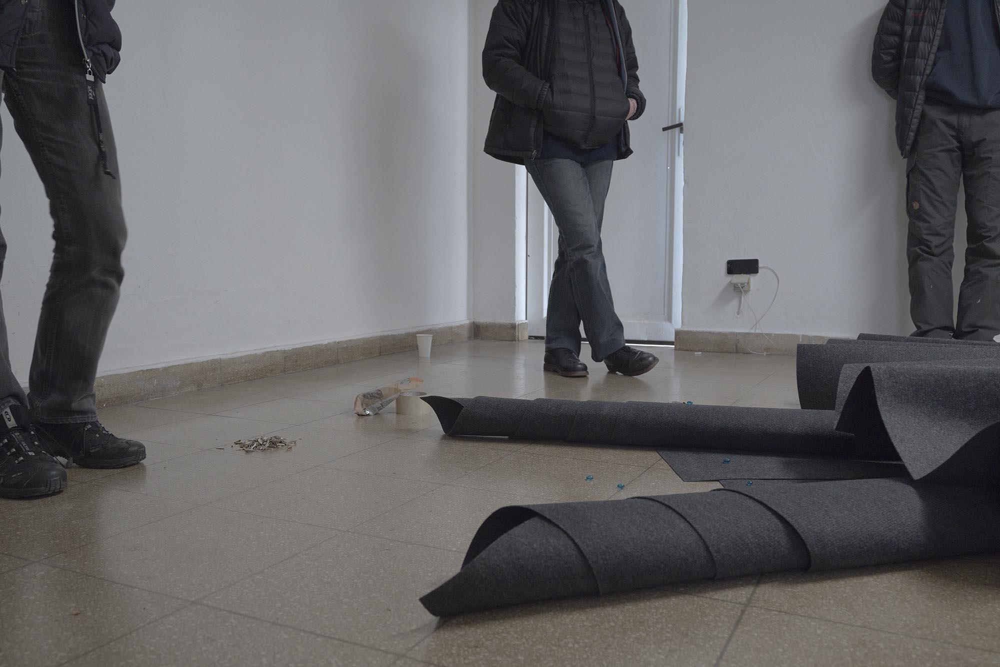
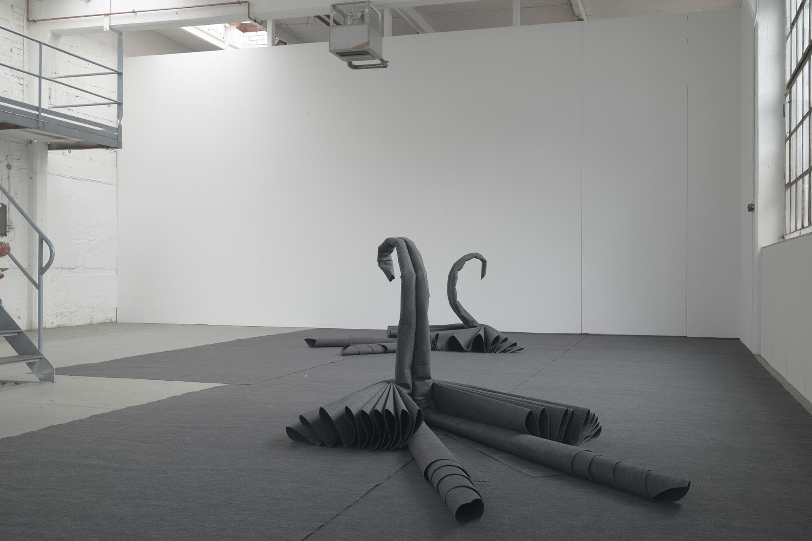
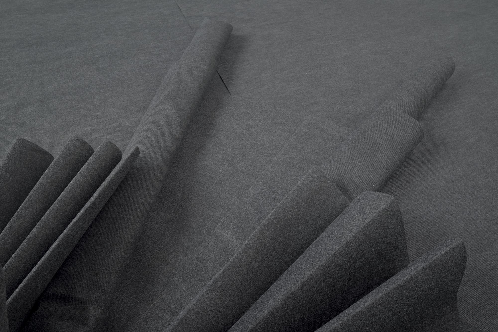
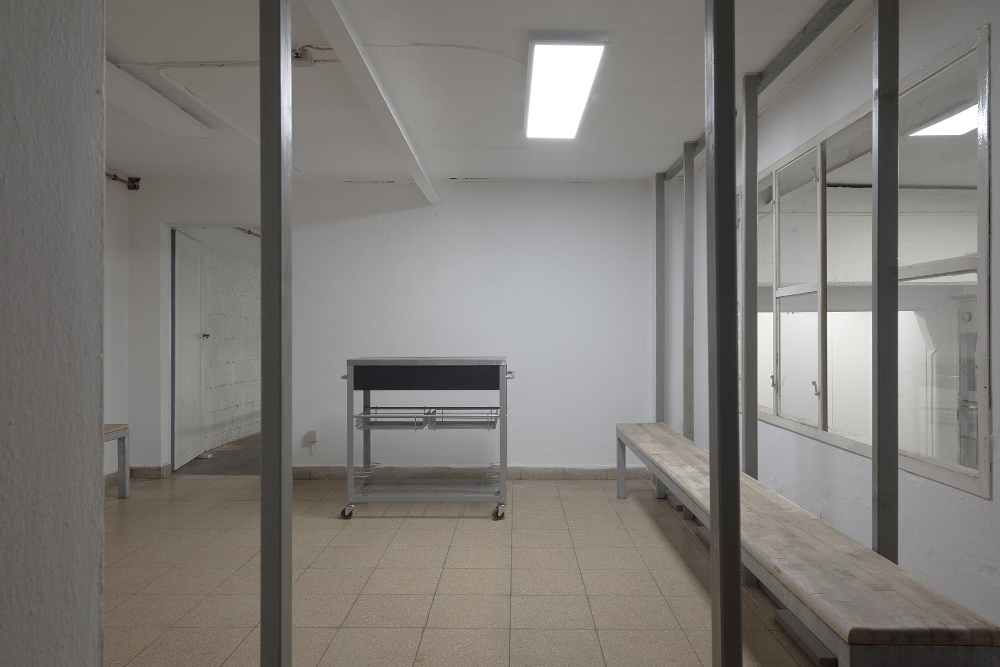
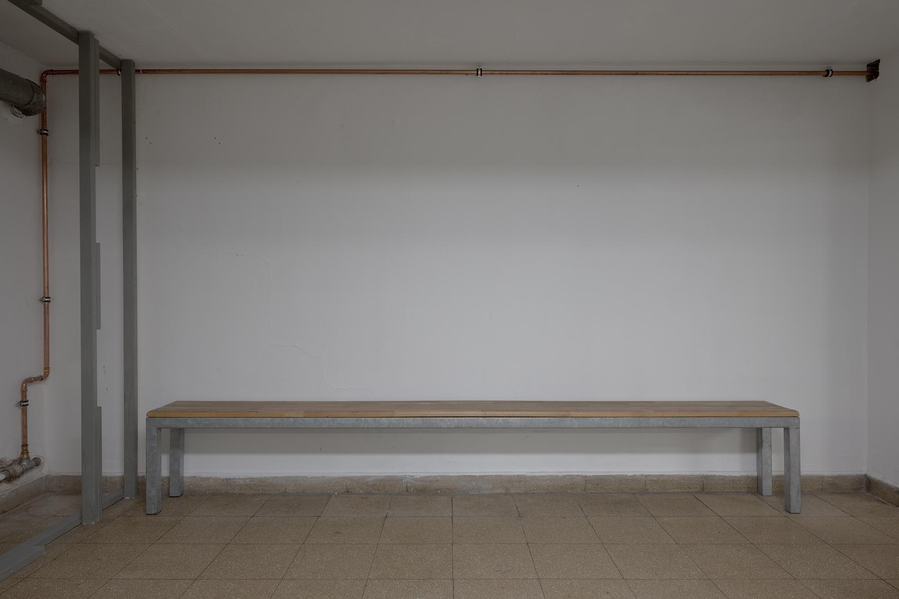

(A dark grey carpet is obviously laid out in the space.)
Regarding the question whether the floor or the ceiling is more important, we could say that the carpet makes the floor more inhabitable, it is inhabited by a Swan.
(This carpet is a Swan. A fish’ ceiling is a bird’s floor.)
Upstairs, yet another Swan, its gaze fixed, piercing through one window, overlooking production, then through another window out on the horizon.
The Seminar took place from December 15th till 18th at Fondation Tschuess.
Preparatory meetings were held online throughout the months of October, November and December.
Anonymous online chatrooms and video calls where used to argue about this planned event.